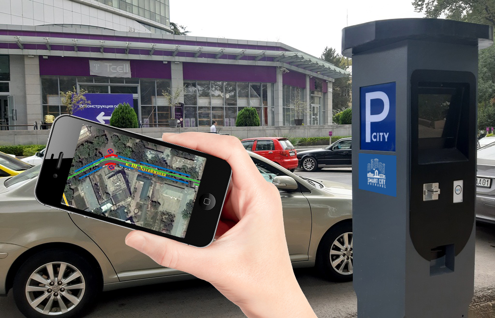
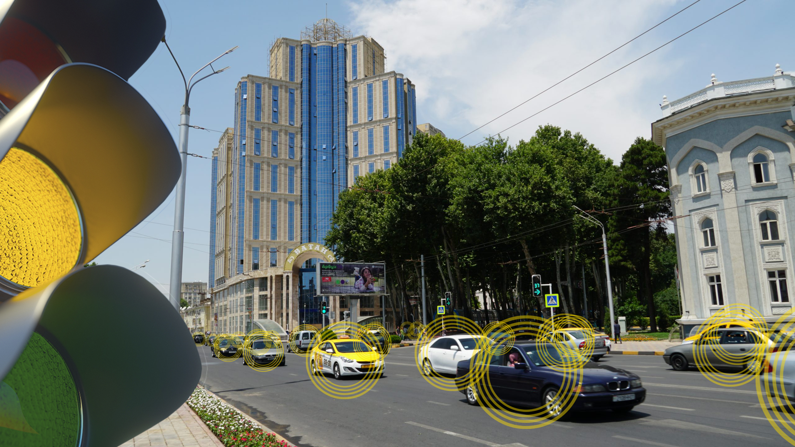
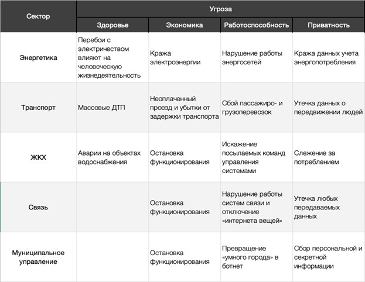

Умная безопасность
- качественное повышение уровня безопасности и снижение количества преступлений посредством цифровых и других инновационных технологий;
- использование новых решений и технологий информирования для оповещения населения и обеспечения пожарной безопасности;
- эффективное противодействие киберугрозам за счет использования технологий ИИ, блокчейн, квантовой криптографии;
- создание городской службы кибербезопасности;
- обеспечение безопасности городской инфраструктуры - лифтового хозяйства, информационно-телекоммуникационного оборудования, включая устройства Интернета вещей.
Как защитить умный город и его обитателей от злоумышленников
Понятие «умный» город включает много компонентов, среди которых — создание муниципального интернета вещей, то есть вывод в онлайн всей цифровой техники для централизованного доступа к ней. Речь идет о счетчиках, которые сами передают данные куда следует,

камерах, присылающих на серверы полиции информацию о нарушителях,

датчиках на парковочных местах, помогающих найти через смартфон свободное место,
«умных» светофорах и дорожных знаках, реагирующих на трафик и осадки.
Любые данные, для снятия которых ранее требовалось присутствие человека, в «умном» городе передаются через интернет, а интеллектуальные системы принимают решения, опираясь на них.
На деле за каждой этой новой возможностью, помимо несомненных выгоды и удобства, скрываются новые опасности: что, если «умный» шлагбаум перестанет выпускать автомобили с парковки или «умный» светофор будет менять сигнал раз в секунду? Хуже того, за такими сбоями могут стоять не ошибки в ПО, а злоумышленники — хакеры, целенаправленно взламывающие экосистему интернета вещей и «умные» города. Итак, как же обеспечить безопасное развитие новых технологий?
Уязвимости «умных городов»
Любая электронная информационная система теоретически может быть взломана, и исключений тут нет. Если некое устройство, представляющее собой часть экосистемы «умного» города, взаимодействует с сетью, передает на удаленный компьютер некие данные и тем более принимает от него команды, злоумышленники рано или поздно найдут способ заполучить доступ к нему.
«Умный» город удобен и хорош ровно до тех пор, пока его инфраструктуру злоумышленники не начали использовать во вред. Чем сложнее инфраструктура и чем большее количество устройств она включает, тем большую опасность представляет ее взлом — от потери личных и конфиденциальных данных до нарушения функционирования систем города и массовых сбоев информационных и энергосистем. В XXI веке защите серверов и «умных» систем нужно уделять гораздо больше внимания, чем строительству заборов и установке шлагбаумов.
Причины и результаты взломов
Поставив перед собой задачу проникнуть в информационную городскую экосистему, хакеры тщательно анализируют всю открытую информацию: мобильные приложения, веб-сайты и прошивки устройств в поисках уязвимостей. Затем происходит сканирование сети в поисках устройств и сниффинг их трафика в поисках любой ценной информации. В некоторых случаях нужные данные передаются в незашифрованном виде, но иногда хакерам приходится потрудиться в поиске пароля для доступа к администраторским функциям. После этого происходит непосредственно взлом и перехват управления элементом «умного города».
Взлом устройств интернета вещей значительно проще, чем атака на компьютер или сервер. Причина в технологических ограничениях — зачастую компактные и максимально удешевленные для массового производства элементы «умного» города не обладают достаточной производительностью для ресурсоемкой шифровки трафика, поэтому данные, в том числе ключи сессий и пароли, передаются в открытом виде.
Еще один фактором риска является неграмотное развертывание «умного» города, при котором администраторские пароли остаются стандартными, порты открыты и никакой защиты от подключения посторонних устройств не предусмотрено.
Защита «умных городов»
После исследования случаев хакерских атак на интернет вещей и компоненты «умных» городов, Trend Micro составил чеклист, следование которому поможет обеспечить безопасность внедрения «умных» технологий.
- Проведение пентестов (тестов на проникновение)
- Упор на поддержание безопасности в договоре на обслуживание
- Своевременное обновление ПО
- Своевременное обновление парка оборудования
- Придание высшего приоритета сохранению приватности
- Шифрование и сложная аутентификация
- Наличие «ручного управления»
- Обеспечение отказоустойчивости
- Обеспечение функционирования городской инфраструктуры без «умных» элементов
Специалисты-пентестеры должны тщательно проверить систему на предмет взлома — по сути, легальные хакеры проведут поиск уязвимостей и дадут советы по их устранению. Поручать пентест необходимо независимой авторитетной компании, потому как некачественный пентест равнозначен его отсутствию.
При заключении контрактов на обслуживание умной экосистемы важно особое внимание уделить сопровождению по обеспечению безопасности. Компания-подрядчик должна нести ответственность за утечку данных, а также быть готовой в любое время и в кратчайшие сроки ликвидировать сбои и уязвимости.
Устаревшие прошивки устройств — одна из уязвимых точек «умного города». Микропрограммы могут попасть в публичный доступ, где будут тщательно изучены хакерами на предмет уязвимостей. Регулярное обновление прошивок закрывает известные уязвимости и значительно повышает безопасность инфраструктуры.
Элементы интернета вещей имеют больший жизненный цикл, чем потребительская электроника, но и они нуждаются в замене. Планомерно обновлять парк оборудования дешевле и проще, чем разом заменять всю устаревшую инфраструктуру.
Пересылаемые в рамках «умного» города данные должны быть максимально обезличены, чтобы их утечка не ставила под угрозу безопасность конкретных лиц. Доступ к конфиденциальным данным должен быть строго ограничен.
По возможности весь трафик «умного» города должен быть зашифрован. Каждый сеанс доступа к оборудованию необходимо защищать токеном или сессионным ключом. Ну а доступ горожан к «умным» сервисам лучше всего будет защитить несколькими факторами аутентификации: биометрия, разовые пароли и двухфакторная авторизация.
Каждая информационная система должна иметь возможность прямого ручного управления на случай сбоя автоматики. Если «умный» город начнет сходить с ума из-за действий компьютера, должна быть возможность перевести всё управление на человека.
«Умный» город должен продолжать работу даже в случае отказа нескольких компонентов. Для этого прибегают к резервированию и дублированию серверов и сетей.
На случай плохого сценария, когда вся «умная» инфраструктура откажется работать, город должен иметь возможность продолжать нормальную жизнь. Энергетика, транспорт, системы жизнеобеспечения нельзя полностью завязывать на компьютерное управление — сбой может возникнуть не только по причине взлома, но и из-за аварий и природных катаклизмов.
Свежие записи
Встреча ГУП «Умный город» с компанией VINAFORE INFORMATICS AND TELECOMMUNICATION JSC Как таджикской компании открыть офис на рынном языке Встреча директора ГУП «Умный город» с Постоянным представителем Азиатского банкаразвития в Республике Таджикистан Санпропин «Энергo» установит по 46 адресам в Москве до конца года В Москве открыт кабинет зарядка электромобилей с просунской способностью до 500
машин в сутки
Пойтахти Точикистон — шахри Душанбе оинаи тавризу зиндагии миллати точик ва
даъвати точикон аст.
Асосгузори сулҳу ваҳдати миллӣ — Пешвои миллат, Президенти
Чумҳурии Точикистон муҳтарам Эмомалӣ Раҳмон